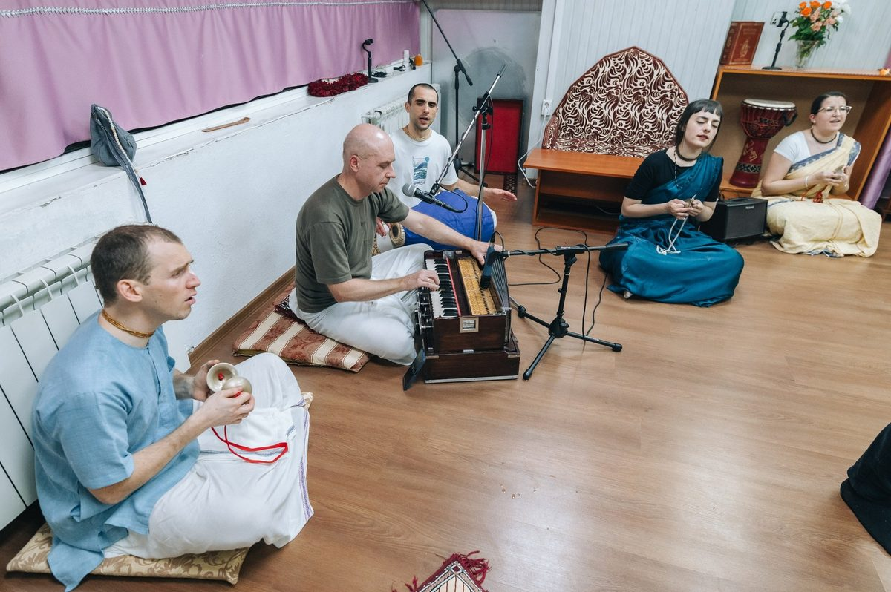

На вас чекають
Чотири прості речі. Нічого містичного — приходьте і перевірте.

🎵 Мантроспіви
Колективне співання мантри Харе Крішна. Не треба вміти — просто слухайте.

📖 Лекція
Філософія Вед простою мовою: хто я, навіщо живу, що далі. Питання вітаються.

🍲 Вегетаріанський обід
Щедрий гарячий прасад — їжа, приготована з любов'ю. Безкоштовно для всіх.